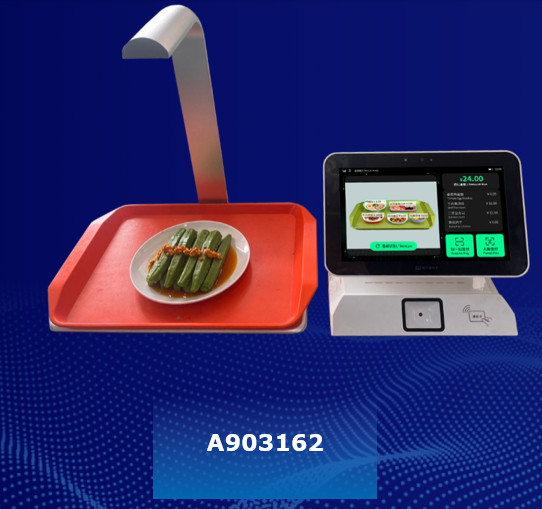
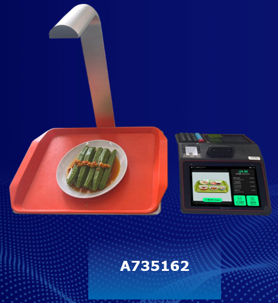

AI Checkout Terminal (New Models)
AI-Powered Food Recognition and Cashless Payment in One Compact Device
Automate food identification, bill calculation, and payment in approximately 3 seconds. Designed for company cafeterias, university cafeterias, and self-service restaurants, the AI Checkout Terminal New Models combine AI-powered food recognition with integrated cashless payment in a compact, tabletop device.
No more memorizing dish prices or manually entering every item. Simply place the tray in the recognition area, and the system automatically identifies the dishes, calculates the total, and enables payment.
Faster Checkout. Fewer Errors. Smoother Cafeteria Operations.

The Challenge: Traditional Cafeteria Checkout Is Time-Consuming
Manual Checkout Creates Bottlenecks During Peak Hours
In company cafeterias, university cafeterias, and self-service restaurants, customers typically select several dishes from a variety of prepared meals and bring their trays to the checkout counter. Unlike supermarkets, where products can be scanned using barcodes, many cafeteria dishes do not have individual barcodes. Cashiers must identify each dish, remember its price or refer to the menu, manually enter the amount, calculate the total, and process payment.
Long Queues
Manual price entry slows down checkout during busy lunch periods.
Human Errors
Similar-looking dishes and frequently changing menus make accurate billing difficult.
Staff Workload
Cashiers must concentrate on identifying dishes and entering prices while handling a continuous flow of customers.
Operational Pressure
Cafeteria operators need to maintain fast, accurate service despite staffing constraints.
Traditional checkout methods can struggle to keep up with demand during peak hours.
The Solution: AI Recognition and Payment in One Device
From Dish Recognition to Payment in Approximately 3 Seconds
Place the Tray
Customers place their trays and dishes in the AI recognition area.
Automatic Dish Recognition
The AI camera identifies the dishes and determines their corresponding prices.
Instant Bill Calculation
The system automatically calculates the total without requiring manual entry of each dish.
Cashless Payment
Pay via QR code, IC card, or face recognition where available.
Combining AI-powered dish recognition, automatic bill calculation, and integrated payment in one device.
The entire checkout process takes approximately 3 seconds!
All-in-One Means Greater Stability
Many competing solutions split dish checkout and payment across two separate terminals, creating a risk of communication failures between them. This product integrates recognition, checkout, and payment into a single device — eliminating inter-terminal communication entirely and removing communication-related failures at the root for more stable operation.

Watch the AI Checkout Terminal New Model in action — from placing the tray to completed payment.
Compact Design for Flexible Installation
AI Checkout Terminal (New Models)

All-in-One, Tabletop-Ready
Unlike large, dedicated checkout machines, the New Models feature a compact design suitable for placement on a standard checkout counter. They integrate the main functions into one device, helping cafeterias introduce AI-powered checkout without requiring a large installation space.
Key Features
- 11.6-inch touchscreen (New Model 2) / 8-inch touchscreen (New Model 1) — an easy-to-use interface for checkout operations.
- 5MP AI recognition camera — captures food images for automatic dish identification.
- Integrated payment interface — supports QR code and IC card payments.
- Face recognition capability — enables face recognition payment where supported.
- Flexible connectivity — supports Wi-Fi, Bluetooth, and wired LAN.
- All-in-one design — combines food recognition and payment functions in one compact terminal.
Ideal for
Two Compact Models to Choose From
Select the display size that fits your counter and operation.
AI Checkout Terminal (New Model 1)
Compact model with an 8-inch touchscreen. Integrates face recognition, QR, and card payment in one unit — ideal for the most space-constrained counters.
- 8-inch touchscreen
- Integrated face camera / QR / card reader
- 5MP dish recognition camera
- 2MP infrared binocular face camera
- Wi-Fi / Bluetooth / wired LAN
AI Checkout Terminal (New Model 2)
Compact model with a larger 11.6-inch touchscreen. Integrates face recognition, QR, and card payment in one unit — a roomier interface while staying tabletop-friendly.
- 11.6-inch touchscreen
- Integrated face camera / QR / card reader
- 5MP dish recognition camera
- 2MP infrared binocular face camera
- Wi-Fi / Bluetooth / wired LAN
Flexible Cashless Payment Options
Choose the Payment Method That Fits Your Operation
Different cafeterias have different customer groups and payment requirements. The AI Checkout Terminal New Models support multiple payment options, helping operators choose an appropriate payment configuration.
QR Code Payment
Customers scan a QR code to complete payment using a compatible payment service.
IC Card Payment
Customers pay using compatible contactless IC cards.
Face Recognition Payment
Customers can use face recognition payment when the required payment system and account integration are available.
These options help reduce reliance on cash handling and support faster checkout operations.
Business Benefits
Faster Service, Lower Workload, Better Customer Experience
Reduce Checkout Queues
Automatic recognition and payment shorten waiting times during peak periods.
Reduce Manual Work
Cashiers no longer identify every dish or enter each price, freeing them for other tasks.
Improve Billing Accuracy
Automatic identification and calculation help reduce manual-entry errors.
Improve Customer Satisfaction
Faster checkout lets customers spend less time waiting and more time enjoying meals.
Optimize Cafeteria Operations
AI-powered checkout provides a foundation for modernizing cafeteria management.
More Stable Operation
All-in-one design removes inter-terminal communication, preventing related failures.
Technical Specifications
Key specifications for the AI Checkout Terminal (New Model 2)
| Item | Specification |
|---|---|
| Product Name | AI Checkout Terminal (New Model 2) |
| Display | 11.6-inch touchscreen |
| Dish Recognition Camera | 5MP |
| Face Recognition Camera | 2MP infrared binocular camera |
| Payment Interface | QR code / IC card / face recognition |
| Connectivity | Wi-Fi / Bluetooth / Wired LAN |
| Design | Compact, integrated tabletop terminal |
| Architecture | All-in-one integrated design (recognition + checkout + payment in one device; no inter-terminal communication) |
Ready to Modernize Your Cafeteria Checkout?
Reduce manual checkout work, shorten queues, and improve the customer experience with AI-powered food recognition and integrated cashless payment.
Whether you operate a company cafeteria, university cafeteria, hospital cafeteria, or self-service restaurant, we can discuss how the AI Checkout Terminal New Models may fit your operation.